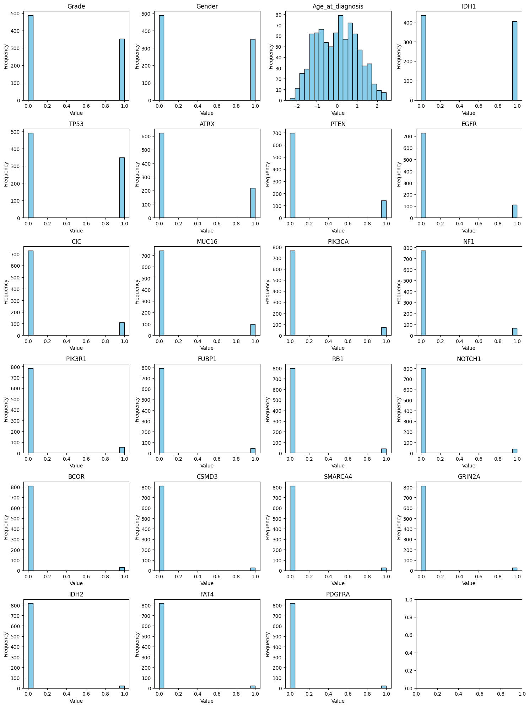

Classification
Q & A session: Logistic regression
Instructor note
Participants were given 30 minutes to
go through the Jupter notebook and
select correct answers for the questions
Instructor narrate the answers and reasoning after the self-study time
time: 30 minutes
Understanding biological context (ML-use case)
Questions
Question 1:
What type of machine learning problem is glioma grading/classification as described in this tutorial?
A) Unsupervised clustering problem
B) Binary classification problem
C) Multi-class classification problem
D) Regression problem
Question 2:
In this study, how is the target variable encoded?
A) LGG = 1, GBM = 0
B) LGG = 0, GBM = 1
C) Both are encoded as 1
D) Text labels are used without numeric encoding Answer: - B) LGG = 0, GBM = 1 Explanation: The target variable encoding is explicitly stated as 0 = “LGG” and 1 = “GBM”.
Question 3:
What types of features are being used in this logistic regression model?
A) Only genetic mutation data
B) Only clinical features
C) 20 most frequently mutated genes plus 3 clinical features
D) All available genetic and clinical data
Question 4:
Why is accurate glioma grading/classification clinically important?
A) It determines the research funding allocation
B) Different grades require different treatment approaches and have different prognoses
C) It’s only important for statistical purposes
D) It helps organize hospital records
Visualize data distributions
Questions

Question 1:
Binary features (keeping them as 0/1) while scaling Age_at_diagnosis. What is the primary reason why scaling binary features is generally NOT recommended in logistic regression?
A) Binary features are too simple to benefit from scaling
B) Scaling binary features would destroy their natural interpretability - coefficients would no longer represent the change from “absent” (0) to “present” (1)
C) Binary features automatically have equal variance, so scaling is unnecessary
D) Logistic regression algorithms cannot handle scaled binary features
Question 2:
Given the heavy imbalance in most binary features (with most values being 0 and small number of observations with 1s’), what potential issue might this create during logistic regression training?
A) The model will converge faster due to the simplicity of the data
B) The model may have difficulty learning meaningful patterns from rare events (1s) and might be biased toward predicting the majority class
C) The imbalanced features will automatically be weighted equally by the algorithm
Question 3:
When interpreting logistic regression coefficients for the heavily imbalanced binary features shown in these plots, what should you be particularly cautious about?
A) Coefficients for rare events may be unstable and can lead to poor generalization
B) Coefficients will be automatically adjusted by the algorithm to account for imbalance
C) Imbalanced features always produce more reliable coefficient estimates
D) The scaling of Age_at_diagnosis will make other coefficients uninterpretable
Split original dataset
Questions
Question 1:
In the train_test_split code, test_size=0.3 means 30% of data goes to testing. For a medical dataset like glioma classification, what is the primary consideration when choosing this split ratio?

A) Larger test sets always give better model performance
B) Balancing reliable performance evaluation with sufficient training data, especially important given limited medical data availability
C) Test size should always be exactly 30% regardless of dataset characteristics
D) Smaller test sets are always preferred to maximize training data
Question 2:
In the train_test_split code, why is the stratify=gliomas["Grade"] parameter crucial in this glioma classification problem?
A) It randomly shuffles the data for better performance
B) It ensures both training and test sets have proportional representation of LGG and GBM cases
C) It sorts the data by grade for easier processing
D) It removes outliers from the dataset
The Model Output (Probability)
Questions
Question 1:
The histogram shows a distinctive U-shaped distribution of predicted probabilities, with many predictions clustered near 0.0 and 1.0, and fewer predictions in the middle range (0.3-0.7). What does this pattern indicate about the model’s behavior?
A) The model is making unreliable predictions
B) The model is well-calibrated and confident in most of its predictions, clearly separating the two classes
C) The model has failed to converge properly during training
D) The sigmoid transformation is not working correctly
Question 2: What does lr.predict_proba(X_test) output, and why are probability predictions particularly valuable in medical diagnosis like glioma classification?
A) It outputs only the predicted class labels (0 for LGG, 1 for GBM)
B) It outputs probability estimates for each class (P(LGG) and P(GBM)) for each patient, allowing clinicians to assess prediction confidence
C) It outputs the raw coefficient values for each gene and clinical feature
D) It outputs the training accuracy of the model
Predict test-datasaets
Questions
Question 1:
What is the key difference between lr.predict(X_test) and lr.predict_proba(X_test) in this glioma classification model?
A)
predict()gives probabilities for each class, whilepredict_proba()gives final class labelsB)
predict()gives final class decisions (0 for LGG, 1 for GBM) by applying a 0.5 threshold to probabilities, whilepredict_proba()gives the actual probability valuesC)
predict()is more accurate thanpredict_proba()D) There is no difference between the two methods
Examine and understand the importance of features in predicting classes
Questions
Question 1 (Coefficient Sign Interpretation):
In this glioma classification model, what does a positive coefficient in lr.coef_ indicate for a specific gene or clinical feature?
A) The feature has no effect on glioma classification
B) The feature increases the likelihood of predicting GBM (class 1) when present or higher in value
C) The feature increases the likelihood of predicting LGG (class 0) when present or higher in value
D) The feature should be removed from the model

Question 2 (Coefficient Sign Interpretation):
Looking at the feature importance plot, what can you conclude about the features GRIN2A (rightmost bar) and IDH1 (leftmost bar) in terms of their effect on the predicted outcome?
A) GRIN2A decreases the probability of the positive class, while IDH1 increases it
B) GRIN2A increases the probability of the positive class, while IDH1 decreases it
C) Both features have the same effect but different magnitudes
D) The sign of the coefficient doesn’t matter, only the magnitude
Evaluation of the model performance
Questions

Question 1:
Based on the confusion matrix shown, what are the True Positives, False Positives, True Negatives, and False Negatives for this glioma classification model?
A) TP=124, FP=22, TN=94, FN=12
B) TP=94, FP=22, TN=124, FN=12
C) TP=22, FP=94, TN=12, FN=124
D) TP=94, FP=12, TN=124, FN=22